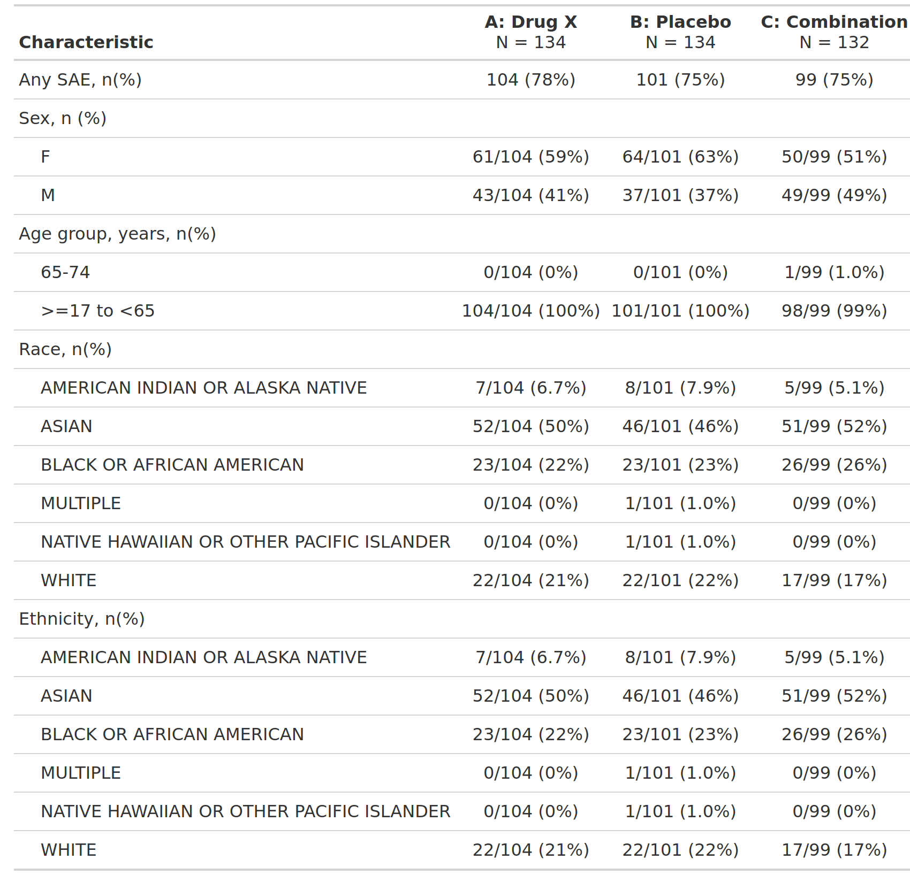

Overview of Serious Adverse Events by Demographic Subgroup, Safety Population, Pooled Analysis (or Trial X)
FDA Table 50
table
FDA
safety
adverse events
Code
# Load libraries & data -------------------------------------
library(dplyr)
library(cards)
library(gtsummary)
adae <- pharmaverseadam::adae
adsl <- pharmaverseadam::adsl
# This specific dataset is reduced significantly after filtering.
# We'll take a few steps to ensure factor levels are present and
# match between the AE data and the denominators.
adsl <- adsl |>
filter(SAFFL == "Y") |>
mutate(TRT01A = as.factor(TRT01A))
adae <- adae |> mutate(
TRT01A = as.factor(TRT01A),
SEXGR = "Sex, n (%)",
SEXGR1 = as.factor(SEX),
AGEGR = "Age group, years, n(%)",
RACEGR = "Race, n(%)",
ETHNICGR = "Ethnicity, n(%)",
ETHNICGR1 = as.factor(RACE)
)
data <- adae |>
filter(
SAFFL == "Y",
TRTEMFL == "Y",
AESER == "Y"
)
data_any_sae <- adae |>
filter(AESER == "Y") |>
mutate(
AESER = "Any SAE, n(%)"
)Code
tbl_any_sae <- tbl_hierarchical(
data = data_any_sae,
denominator = adsl,
id = "USUBJID",
by = "TRT01A",
variables = "AESER",
statistic = ~"{n} ({p}%)",
label = AESER ~ "Characteristic"
)
tbl_sex <- tbl_hierarchical(
data = data,
denominator = data_any_sae |> slice_head(by = c(USUBJID)),
id = "USUBJID",
by = "TRT01A",
variables = c(SEXGR, SEXGR1),
include = SEXGR1,
statistic = ~"{n}/{N} ({p}%)"
)
tbl_agegr1 <- tbl_hierarchical(
data = data,
denominator = data_any_sae |> slice_head(by = c(USUBJID)),
id = "USUBJID",
by = "TRT01A",
variables = c(AGEGR, AGEGR1),
include = AGEGR1,
statistic = ~"{n}/{N} ({p}%)"
)
tbl_race <- tbl_hierarchical(
data = data,
denominator = data_any_sae |> slice_head(by = c(USUBJID)),
id = "USUBJID",
by = "TRT01A",
variables = c(RACEGR, RACEGR1),
include = RACEGR1,
statistic = ~"{n}/{N} ({p}%)"
)
tbl_ethnic <- tbl_hierarchical(
data = data,
denominator = data_any_sae |> slice_head(by = c(USUBJID)),
id = "USUBJID",
by = "TRT01A",
variables = c(ETHNICGR, ETHNICGR1),
include = ETHNICGR1,
statistic = ~"{n}/{N} ({p}%)"
)
tbl <- list(tbl_any_sae, tbl_sex, tbl_agegr1, tbl_race, tbl_ethnic) |>
tbl_stack() |>
modify_indent("label", rows = !(variable %in% c("..ard_hierarchical_overall..", "AESER", "SEXGR", "AGEGR", "RACEGR", "ETHNICGR"))) |>
remove_footnote_header(columns = everything()) |>
modify_post_fmt_fun(
fmt_fun = ~ ifelse(. == "0/0 (NA%)", "0 (0%)", .),
columns = all_stat_cols()
)Table 1 Column Name Header
label "**Characteristic**"
stat_1 "**Placebo** \nN = 86"
stat_2 "**Xanomeline High Dose** \nN = 72"
stat_3 "**Xanomeline Low Dose** \nN = 96"
Table 2 Column Name Header
label "**SEXGR** \n **SEXGR1**"
stat_1 "**Placebo** \nN = 0"
stat_2 "**Xanomeline High Dose** \nN = 1"
stat_3 "**Xanomeline Low Dose** \nN = 2"
Table 3 Column Name Header
label "**AGEGR** \n **Pooled Age Group 1**"
stat_1 "**Placebo** \nN = 0"
stat_2 "**Xanomeline High Dose** \nN = 1"
stat_3 "**Xanomeline Low Dose** \nN = 2"
Table 4 Column Name Header
label "**RACEGR** \n **Pooled Race Group 1**"
stat_1 "**Placebo** \nN = 0"
stat_2 "**Xanomeline High Dose** \nN = 1"
stat_3 "**Xanomeline Low Dose** \nN = 2"
Table 5 Column Name Header
label "**ETHNICGR** \n **ETHNICGR1**"
stat_1 "**Placebo** \nN = 0"
stat_2 "**Xanomeline High Dose** \nN = 1"
stat_3 "**Xanomeline Low Dose** \nN = 2" | Characteristic |
Placebo N = 86 |
Xanomeline High Dose N = 72 |
Xanomeline Low Dose N = 96 |
|---|---|---|---|
| Any SAE, n(%) | 0 (0%) | 1 (1.4%) | 2 (2.1%) |
| Sex, n (%) | |||
| F | 0 (0%) | 1/1 (100%) | 1/1 (100%) |
| M | 0 (0%) | 0 (0%) | 1/1 (100%) |
| Age group, years, n(%) | |||
| >64 | 0 (0%) | 1/1 (100%) | 2/2 (100%) |
| Race, n(%) | |||
| White | 0 (0%) | 1/1 (100%) | 2/2 (100%) |
| Ethnicity, n(%) | |||
| WHITE | 0 (0%) | 1/1 (100%) | 2/2 (100%) |
[[1]]
[[1]]$tbl_hierarchical{cards} data frame: 18 x 13 group1 group1_level variable variable_level context stat_name stat_label stat stat_fmt fmt_fun warning error gts_column
1 <NA> TRT01A Placebo tabulate n n 86 86 0 stat_1
2 <NA> TRT01A Placebo tabulate N N 254 254 0 stat_1
3 <NA> TRT01A Placebo tabulate p % 0.339 33.9 <fn> stat_1
4 <NA> TRT01A Xanomeli… tabulate n n 72 72 0 stat_2
5 <NA> TRT01A Xanomeli… tabulate N N 254 254 0 stat_2
6 <NA> TRT01A Xanomeli… tabulate p % 0.283 28.3 <fn> stat_2
7 <NA> TRT01A Xanomeli… tabulate n n 96 96 0 stat_3
8 <NA> TRT01A Xanomeli… tabulate N N 254 254 0 stat_3
9 <NA> TRT01A Xanomeli… tabulate p % 0.378 37.8 <fn> stat_3
10 TRT01A Placebo AESER Any SAE,… hierarch… n n 0 0 <fn> stat_1
11 TRT01A Placebo AESER Any SAE,… hierarch… N N 86 86 <fn> stat_1
12 TRT01A Placebo AESER Any SAE,… hierarch… p % 0 0 <fn> stat_1
13 TRT01A Xanomeli… AESER Any SAE,… hierarch… n n 1 1 <fn> stat_2
14 TRT01A Xanomeli… AESER Any SAE,… hierarch… N N 72 72 <fn> stat_2
15 TRT01A Xanomeli… AESER Any SAE,… hierarch… p % 0.014 1.4 <fn> stat_2
16 TRT01A Xanomeli… AESER Any SAE,… hierarch… n n 2 2 <fn> stat_3
17 TRT01A Xanomeli… AESER Any SAE,… hierarch… N N 96 96 <fn> stat_3
18 TRT01A Xanomeli… AESER Any SAE,… hierarch… p % 0.021 2.1 <fn> stat_3
[[2]]
[[2]]$tbl_hierarchical{cards} data frame: 27 x 15 group1 group1_level group2 group2_level variable variable_level context stat_name stat_label stat stat_fmt fmt_fun warning error gts_column
1 <NA> <NA> TRT01A Placebo tabulate n n 0 0 0 stat_1
2 <NA> <NA> TRT01A Placebo tabulate N N 3 3 0 stat_1
3 <NA> <NA> TRT01A Placebo tabulate p % 0 0.0 <fn> stat_1
4 <NA> <NA> TRT01A Xanomeli… tabulate n n 1 1 0 stat_2
5 <NA> <NA> TRT01A Xanomeli… tabulate N N 3 3 0 stat_2
6 <NA> <NA> TRT01A Xanomeli… tabulate p % 0.333 33.3 <fn> stat_2
7 <NA> <NA> TRT01A Xanomeli… tabulate n n 2 2 0 stat_3
8 <NA> <NA> TRT01A Xanomeli… tabulate N N 3 3 0 stat_3
9 <NA> <NA> TRT01A Xanomeli… tabulate p % 0.667 66.7 <fn> stat_3
10 TRT01A Placebo SEXGR Sex, n (… SEXGR1 F hierarch… n n 0 0 <fn> stat_1
11 TRT01A Placebo SEXGR Sex, n (… SEXGR1 F hierarch… N N 0 0 <fn> stat_1
12 TRT01A Placebo SEXGR Sex, n (… SEXGR1 F hierarch… p % NaN NA <fn> stat_1
13 TRT01A Xanomeli… SEXGR Sex, n (… SEXGR1 F hierarch… n n 1 1 <fn> stat_2
14 TRT01A Xanomeli… SEXGR Sex, n (… SEXGR1 F hierarch… N N 1 1 <fn> stat_2
15 TRT01A Xanomeli… SEXGR Sex, n (… SEXGR1 F hierarch… p % 1 100 <fn> stat_2
16 TRT01A Xanomeli… SEXGR Sex, n (… SEXGR1 F hierarch… n n 1 1 <fn> stat_3
17 TRT01A Xanomeli… SEXGR Sex, n (… SEXGR1 F hierarch… N N 1 1 <fn> stat_3
18 TRT01A Xanomeli… SEXGR Sex, n (… SEXGR1 F hierarch… p % 1 100 <fn> stat_3
19 TRT01A Placebo SEXGR Sex, n (… SEXGR1 M hierarch… n n 0 0 <fn> stat_1
20 TRT01A Placebo SEXGR Sex, n (… SEXGR1 M hierarch… N N 0 0 <fn> stat_1
21 TRT01A Placebo SEXGR Sex, n (… SEXGR1 M hierarch… p % NaN NA <fn> stat_1
22 TRT01A Xanomeli… SEXGR Sex, n (… SEXGR1 M hierarch… n n 0 0 <fn> stat_2
23 TRT01A Xanomeli… SEXGR Sex, n (… SEXGR1 M hierarch… N N 0 0 <fn> stat_2
24 TRT01A Xanomeli… SEXGR Sex, n (… SEXGR1 M hierarch… p % NaN NA <fn> stat_2
25 TRT01A Xanomeli… SEXGR Sex, n (… SEXGR1 M hierarch… n n 1 1 <fn> stat_3
26 TRT01A Xanomeli… SEXGR Sex, n (… SEXGR1 M hierarch… N N 1 1 <fn> stat_3
27 TRT01A Xanomeli… SEXGR Sex, n (… SEXGR1 M hierarch… p % 1 100 <fn> stat_3
[[3]]
[[3]]$tbl_hierarchical{cards} data frame: 18 x 15 group1 group1_level group2 group2_level variable variable_level context stat_name stat_label stat stat_fmt fmt_fun warning error gts_column
1 <NA> <NA> TRT01A Placebo tabulate n n 0 0 0 stat_1
2 <NA> <NA> TRT01A Placebo tabulate N N 3 3 0 stat_1
3 <NA> <NA> TRT01A Placebo tabulate p % 0 0.0 <fn> stat_1
4 <NA> <NA> TRT01A Xanomeli… tabulate n n 1 1 0 stat_2
5 <NA> <NA> TRT01A Xanomeli… tabulate N N 3 3 0 stat_2
6 <NA> <NA> TRT01A Xanomeli… tabulate p % 0.333 33.3 <fn> stat_2
7 <NA> <NA> TRT01A Xanomeli… tabulate n n 2 2 0 stat_3
8 <NA> <NA> TRT01A Xanomeli… tabulate N N 3 3 0 stat_3
9 <NA> <NA> TRT01A Xanomeli… tabulate p % 0.667 66.7 <fn> stat_3
10 TRT01A Placebo AGEGR Age grou… AGEGR1 >64 hierarch… n n 0 0 <fn> stat_1
11 TRT01A Placebo AGEGR Age grou… AGEGR1 >64 hierarch… N N 0 0 <fn> stat_1
12 TRT01A Placebo AGEGR Age grou… AGEGR1 >64 hierarch… p % NaN NA <fn> stat_1
13 TRT01A Xanomeli… AGEGR Age grou… AGEGR1 >64 hierarch… n n 1 1 <fn> stat_2
14 TRT01A Xanomeli… AGEGR Age grou… AGEGR1 >64 hierarch… N N 1 1 <fn> stat_2
15 TRT01A Xanomeli… AGEGR Age grou… AGEGR1 >64 hierarch… p % 1 100 <fn> stat_2
16 TRT01A Xanomeli… AGEGR Age grou… AGEGR1 >64 hierarch… n n 2 2 <fn> stat_3
17 TRT01A Xanomeli… AGEGR Age grou… AGEGR1 >64 hierarch… N N 2 2 <fn> stat_3
18 TRT01A Xanomeli… AGEGR Age grou… AGEGR1 >64 hierarch… p % 1 100 <fn> stat_3
[[4]]
[[4]]$tbl_hierarchical{cards} data frame: 18 x 15 group1 group1_level group2 group2_level variable variable_level context stat_name stat_label stat stat_fmt fmt_fun warning error gts_column
1 <NA> <NA> TRT01A Placebo tabulate n n 0 0 0 stat_1
2 <NA> <NA> TRT01A Placebo tabulate N N 3 3 0 stat_1
3 <NA> <NA> TRT01A Placebo tabulate p % 0 0.0 <fn> stat_1
4 <NA> <NA> TRT01A Xanomeli… tabulate n n 1 1 0 stat_2
5 <NA> <NA> TRT01A Xanomeli… tabulate N N 3 3 0 stat_2
6 <NA> <NA> TRT01A Xanomeli… tabulate p % 0.333 33.3 <fn> stat_2
7 <NA> <NA> TRT01A Xanomeli… tabulate n n 2 2 0 stat_3
8 <NA> <NA> TRT01A Xanomeli… tabulate N N 3 3 0 stat_3
9 <NA> <NA> TRT01A Xanomeli… tabulate p % 0.667 66.7 <fn> stat_3
10 TRT01A Placebo RACEGR Race, n(… RACEGR1 White hierarch… n n 0 0 <fn> stat_1
11 TRT01A Placebo RACEGR Race, n(… RACEGR1 White hierarch… N N 0 0 <fn> stat_1
12 TRT01A Placebo RACEGR Race, n(… RACEGR1 White hierarch… p % NaN NA <fn> stat_1
13 TRT01A Xanomeli… RACEGR Race, n(… RACEGR1 White hierarch… n n 1 1 <fn> stat_2
14 TRT01A Xanomeli… RACEGR Race, n(… RACEGR1 White hierarch… N N 1 1 <fn> stat_2
15 TRT01A Xanomeli… RACEGR Race, n(… RACEGR1 White hierarch… p % 1 100 <fn> stat_2
16 TRT01A Xanomeli… RACEGR Race, n(… RACEGR1 White hierarch… n n 2 2 <fn> stat_3
17 TRT01A Xanomeli… RACEGR Race, n(… RACEGR1 White hierarch… N N 2 2 <fn> stat_3
18 TRT01A Xanomeli… RACEGR Race, n(… RACEGR1 White hierarch… p % 1 100 <fn> stat_3
[[5]]
[[5]]$tbl_hierarchical{cards} data frame: 18 x 15 group1 group1_level group2 group2_level variable variable_level context stat_name stat_label stat stat_fmt fmt_fun warning error gts_column
1 <NA> <NA> TRT01A Placebo tabulate n n 0 0 0 stat_1
2 <NA> <NA> TRT01A Placebo tabulate N N 3 3 0 stat_1
3 <NA> <NA> TRT01A Placebo tabulate p % 0 0.0 <fn> stat_1
4 <NA> <NA> TRT01A Xanomeli… tabulate n n 1 1 0 stat_2
5 <NA> <NA> TRT01A Xanomeli… tabulate N N 3 3 0 stat_2
6 <NA> <NA> TRT01A Xanomeli… tabulate p % 0.333 33.3 <fn> stat_2
7 <NA> <NA> TRT01A Xanomeli… tabulate n n 2 2 0 stat_3
8 <NA> <NA> TRT01A Xanomeli… tabulate N N 3 3 0 stat_3
9 <NA> <NA> TRT01A Xanomeli… tabulate p % 0.667 66.7 <fn> stat_3
10 TRT01A Placebo ETHNICGR Ethnicit… ETHNICGR1 WHITE hierarch… n n 0 0 <fn> stat_1
11 TRT01A Placebo ETHNICGR Ethnicit… ETHNICGR1 WHITE hierarch… N N 0 0 <fn> stat_1
12 TRT01A Placebo ETHNICGR Ethnicit… ETHNICGR1 WHITE hierarch… p % NaN NA <fn> stat_1
13 TRT01A Xanomeli… ETHNICGR Ethnicit… ETHNICGR1 WHITE hierarch… n n 1 1 <fn> stat_2
14 TRT01A Xanomeli… ETHNICGR Ethnicit… ETHNICGR1 WHITE hierarch… N N 1 1 <fn> stat_2
15 TRT01A Xanomeli… ETHNICGR Ethnicit… ETHNICGR1 WHITE hierarch… p % 1 100 <fn> stat_2
16 TRT01A Xanomeli… ETHNICGR Ethnicit… ETHNICGR1 WHITE hierarch… n n 2 2 <fn> stat_3
17 TRT01A Xanomeli… ETHNICGR Ethnicit… ETHNICGR1 WHITE hierarch… N N 2 2 <fn> stat_3
18 TRT01A Xanomeli… ETHNICGR Ethnicit… ETHNICGR1 WHITE hierarch… p % 1 100 <fn> stat_3